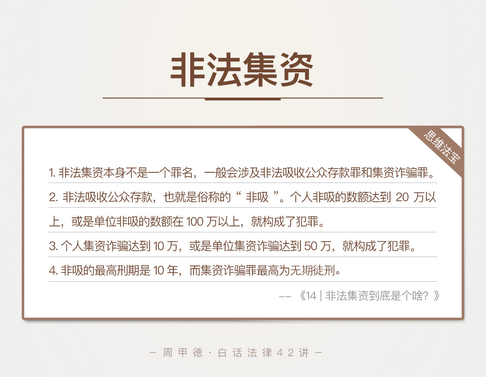

- 00 开篇词 这年头，你真应该懂点法律常识.md
- 01 “老周，我想知道” 常见法律认知盲区（一）.md
- 02 “老周，我想知道” 律师就在你身边（二）.md
- 03 “老周，我想知道” 律师就在你身边（三）.md
- 04 “老周，我想知道” 律师就在你身边（四）.md
- 05 创业未捷老板跑，社保工资哪里讨？.md
- 06 保密还是“卖身”，霸王条款怎么看？.md
- 07 编造流言蹭热度？看守所里降温度！.md
- 08 合同在手欠款难收，报警有用吗？.md
- 09 致创业：谁动了我的股权？.md
- 10 又见猝死！工“殇”究竟是不是工伤？.md
- 11 期权的“前世今生”.md
- 12 裁员面前，你能做的还有什么？.md
- 13 抄袭、盗图为什么做不得？.md
- 14 加班、工资、休假，你知道多少？.md
- 15 受贿原来这么“容易”.md
- 16 今天你用“VPN”了吗？.md
- 17 漏洞在眼前，可以悄悄破解吗？.md
- 18 “爬虫”真的合法吗？.md
- 19 非法集资到底是个啥？.md
- 20 黄色网站？不仅仅是“黄色”罪名.md
- 21 谁修改了我的积分资产？.md
- 22 外挂真能大吉大利吗？.md
- 23 如何看待“从删库到跑路”？.md
- 24 “伪基站”是你的避风港吗？.md
- 25 “网络诈骗”真的离你很远吗？.md
- 26 智斗中介：“北上广”租房图鉴.md
- 27 买买买！买房的“避坑”指南.md
- 28 闪婚又闪离，彩礼怎么理？.md
- 29 离婚还想和平？你要这么做.md
- 30 遗产继承的爱恨情仇.md
- 31 骗术升级？假结婚、假离婚的那些事儿.md
- 32 孩子学校受伤，谁之过？.md
- 33 如何让欠债还钱真正“天经地义”？.md
- 34 从透支到盗刷：人人须知的银行卡纠纷.md
- 35 远离“套路贷”的套路大全.md
- 36 危险！酒驾为什么被罚那么重？.md
- 37 老人倒地，“扶”“不服”？.md
- 38 “能动手就别吵吵”，代价你真的知道吗？.md
- 39 发生交通事故，如何处理？.md
- 40 交通事故综合法宝.md
- 41 婚姻家庭综合法宝.md
- 42 买卖房屋综合法宝.md
- 一键直达 法律专栏“食用”指南.md
- 加餐 “新冠肺炎”影响下，17个常见法律问题解答.md
- 结束语 法律，不会终止的篇章.md
19 非法集资到底是个啥？
技术推动社会发展，这话是一点不假。比如说，互联网金融的发展，就给我们提供了不少便利，像是移动支付啊、花呗借呗这类。但是，需要我们警惕的也不少。比如说，早年的“e租宝事件”，就让P2P和非法集资这两个词在社会上“火”了。
前段时间，我一朋友就跟我咨询了这么个问题。
朋友小白是一家P2P公司的PHP程序员，主要负责网页工作，为公司宣传、招揽客户。然而两个月前，公司的资金链断裂，高达上亿的资金迟迟不能到位，濒临破产。
两个月过去了，用户自然也发现了提现的困难，不少人已经集结到公司闹事，甚至已经有人把公司给告了。作为公司的一份子，小白自然也是惴惴不安，差点被闹事的人送到派出所去。
虽然小白最后还是平安无事，但这次有惊无险的遭遇，也是让他一身冷汗了。不是公司的资金问题吗，怎么就成了非法集资了呢？
涉及到P2P行业，还真是很容易碰到这条红线——非法集资。
法律知识
我们平常所说的非法集资，其实本身并不是一个确切的罪名。非法集资问题，一般会涉及到两种刑事犯罪，非法吸收公众存款罪和集资诈骗罪，我们习惯性都叫做非法集资类犯罪。
非法吸收公众存款罪
非法吸收公众存款，也就是俗称的“非吸”，是指没有经过中国人民银行批准，面向社会大众而不是特定的人吸收资金，并且出具凭证，承诺会在一定期限内，还本金、付利息，或是支付其他有价值的财产。
也就是说，你想要向社会大众征集钱财，必须要有中国人民银行的批准，才是合法的。
另外注意，这里说到的是中国人民银行，可不是中国银行或者其他哪家银行。中国人民银行，其实是国务院的组成部门，属于正部级单位。
事实上，你所知道的那些投资担保公司、财富集团等，不管名字有多高大上，一般都是没有经过中国人民银行批准的。所以不管他们说得天花乱坠，用什么形式让你的财富增值，你都得谨慎点。天上掉下来的可能不是馅饼，而是陷阱。贪图高利息、高回报，很有可能就是血本无归了。
另外，对于非法吸收公共存款，法律上定罪的起点是比较低的。比如说，个人非吸的数额达到20万以上，或是单位非吸的数额在100万以上，就构成了犯罪，可以追究刑事责任了。
不过呢，这类问题的真实情况是，受害人一般都是“不暴雷就不报案”。早期很少有人报案，也不容易被发现，所以往往捅出来就是群体性事件，出现“集体维权”的现象。
集资诈骗罪
集资诈骗，这个其实更可恶，集资诈骗的人本质就是骗子，他们一般用各种欺骗手段来集资，比如说，虚构资金用途、提供虚假文件、或是谎称高回报率等。不同于非吸，集资诈骗的目的就是骗钱，一开始就没打算要还给受害者。
其实非吸和集资诈骗并没有那么严格的界限，一旦发生下面这四种情况，就已经是集资诈骗了。
携带集资款跑路的；
挥霍乱花集资款，导致集资款不能还给用户的；
使用集资款做违法犯罪的事儿，导致无力还款的；
或者存在其他欺骗手段，最终导致造成无力还款的。
集资诈骗罪定罪的起点更低，个人集资诈骗的数额达到10万，或是单位集资诈骗达到50万，就构成了犯罪。但也是同样的规律，不到最后一刻，很少有人报案。其实很容易理解，利益面前的冒险罢了。冒险不是错，但前提是你真的清楚风险有多大。
另外，非法吸收公众存款罪和集资诈骗罪虽然手法相似，可量刑的差别就大了去了。
非法吸收公众存款罪的最高刑期是10年。哪怕是你涉及的钱财有几个亿，只要定罪为非吸，判刑最高不超过十年。
而集资诈骗罪的最高刑期是无期徒刑，以前还有更重的死刑，后来被废除了。但这并不意味着，刑罚变轻了，因为你一不小心可能就是无期徒刑。比如说，某个人做集资诈骗，一旦数额在100万元以上，就属于定罪条件里的“数额特别巨大”，量刑的话，基本就是十年以上或者无期了。
情景分析
了解了这两个罪名，我们接着来看，非法集资究竟是怎么出现的呢？
其实，最开始是一些中小型企业，因为要发展业务、扩大规模，需要更多的资金。但银行贷款的审查比较严格，很多企业压根儿不符合贷款条件。所以，为了企业发展，企业主开始向身边的亲戚朋友借钱，当然不是无偿借钱，而是要支付比银行更高的利息。
慢慢的，亲戚朋友关系圈的亲戚朋友也都开始投钱进来，借钱的队伍就这样不断发展壮大，借钱模式也是不停地迭代。偿到甜头的某些“聪明人”，就趁机开始成立各种担保公司，专门吸钱，然后再转借给企业，赚取中间的利息差。
再后来，出现了各种真真假假需要钱的用钱方，和各种各样的吸钱方，双方的利息也是越来越高。于是，各种名字高大上的“投资担保公司”，“财富咨询公司”等就纷纷进入了人们的视线。因为不加节制，不少吸来的钱被其实都是被人大肆挥霍掉的。利益驱动下，就连不少银行工作人员也加入其中，打着投资理财的旗号，给这些财务公司拉客来赚回扣。
直到现在，大多数非吸平台，尤其是互联网相关的公司，已经不再是传统的非吸模式了。互联网类的非吸平台，往往通过网站或APP等各种方式来吸引资金，一般都会有专门的技术团队、运营团队来提供支持。不少员工在领工资的同时，也会主动招揽客户，领取返点奖励。
那么，在这种情况下，一旦公司的资金链断裂，就像多米诺骨牌一样，公司运营困难、用户要钱无门、整个体系立刻瘫痪。公司的客户，自然是就最大的受害者了。
思维“法”宝
P2P平台暴雷，或者其他的非法集资犯罪，我都办理过不少类似案件。每次看着那些个骗子拿着吸来的钱奢侈享受，而受害者们，有一些刚毕业的大学生不堪压力跳楼，或是一些大爷大妈哭天喊地没了养老钱时，我都很难受。
更难受的是，有些人明明是恶意吸钱，最后却只被判为非吸，量刑最多不超过十年。甚至有些犯罪分子，一分钱也不想还，早早就把钱转移了。他们表面上看一分钱也没有，实际上从监狱出来，还是有钱人。这时，我总觉得我们的法律被人给利用了。
法律确实本身还不够健全，也永远达不到完美，所以总有些人钻空子。对于普通人的我们，要做的就是远离这些人，远离这些坑。

在这里，我也简单总结一下关于非法集资的几个注意事项。
第一，在互联网金融公司工作的程序员，提供技术服务时，一定要清楚公司业务，并且绝对不要参与拉客提成。一旦发现公司符合我们所讲的罪名，尽快辞职；如果你已经拉人投资过，趁公司没倒闭，赶紧把客户的钱给提出来，不然你也要承担责任了。
第二，如果你本人参与了这类集资，一旦发现支付利息困难，尽快退出，哪怕损失点钱，也一定尽早离开，越到最后越亏本。要投资理财，一定要选择官方、正规的大平台。
第三，远离街头的、银行门口的拉客专家，这些人通常号称什么财富顾问、理财顾问、或是投资专家，其实都是拉客投资的。
第四，告诉家里的老人，一定不要参加那些所谓的免费活动，像是免费游玩、免费保健养生等，很多机构正是打着免费的幌子，来吸客投资。
最后送给你一句话，当前没犯事儿，不等于不违法。现在很多机构都是在打擦边球，真正合法的不多，要擦亮眼睛，远离大馅饼和制作大馅饼的工作。不贪婪，就不上当。关于今天的内容，你有过类似经历吗？或者还有哪里的疑惑吗？欢迎留言和我分享。
© 2019 - 2023 Liangliang Lee. Powered by gin and hexo-theme-book.